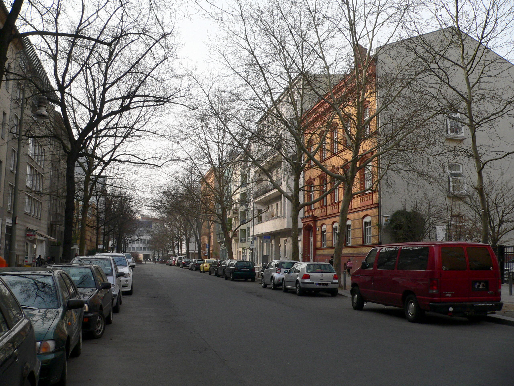
A walk · one street
First version. This one is the same walk, on a darker ground.
You start at the east end, where the street meets Flottwellstraße and Dennewitzstraße. You walk west, to Kluckstraße. It is about seven hundred meters.
The map has twenty-six stops on this street, and the archive has 109 articles about them. Each page is one stop. On the later pages, the photograph comes from the article, and the sentences are what that article says. The line above the text marks the place. East is on the left, because that is where you begin.
Arrow keys or the space bar move to the next plate. To print, use the browser’s print command. Each plate starts a new A4 page.
The photograph is the street itself, 30 March 2011, Peter Kuley. File:TiergartenPohlstraße.jpg, Wikimedia Commons, CC BY-SA 3.0.
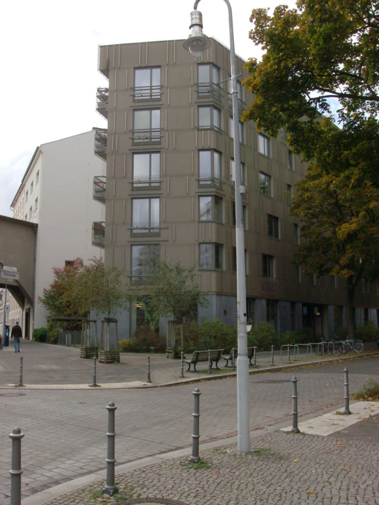
Before the doors
The name of the street. This street has had three. The one on the sign is Ottilie Pohl. For a long time nothing here said who she was. Other names come later, written at a door. Some articles say the street’s name once, and then talk about something else.
What is left. After the war, eleven houses stood out of nearly a hundred. On the way you pass a school, a football ground, a path, and a window. Some of them are gone.
Who uses the street now. Neighbours. Children, for an afternoon. A kindergarten. Rooms under the railway arches. A bar. People arguing about who may plant the pavement, or about a gate that shuts.
The name: Paul Enck, „Straßen im Kiez: Pohlstraße“, 23 October 2020. What was left: J. Lückerath, „Zwischen 1970 und 2025: Bilder aus der Pohlstraße“, 11 February 2026.
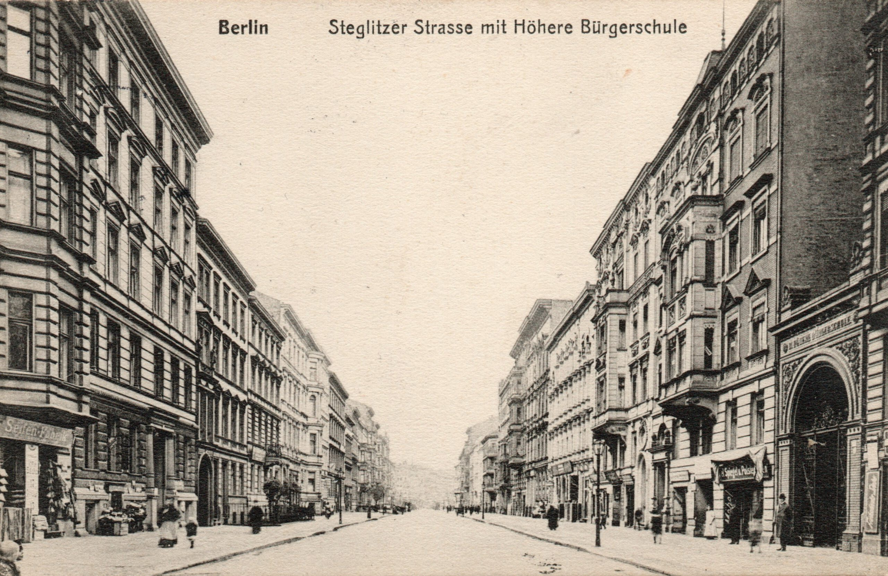
Pin · the name of the street
From 10 June 1862 until 7 March 1936, the street was called Steglitzer Straße. The postcard still carries that name. The fronts are neobaroque, the ornate style of about 1870. The street runs west, toward the bend at Potsdamer Straße.
On 7 March 1936 it became Ludendorffstraße. On 31 July 1947 the city renamed it Pohlstraße, after Ottilie Pohl. She never lived here. The next page says who she was.
In 1936 the house numbers changed as well. The old numbers ran up one side of the street and back down the other. The new numbers alternate: even on the right, odd on the left, counting from Dennewitzstraße. One article, and the Kauperts street directory, date the name from 1946. The city ordinance is dated 31 July 1947.
The postcard is from the collection of Ralf Schmiedecke, printed in „Noch einmal: Wo war die Körner Realschule?“, 14 March 2026. Street dates: Luisenstadt, Steglitzer Straße. Verordnungsblatt für Groß-Berlin, 1947, page 218. Paul Enck, „Straßen im Kiez: Pohlstraße“, 23 October 2020.
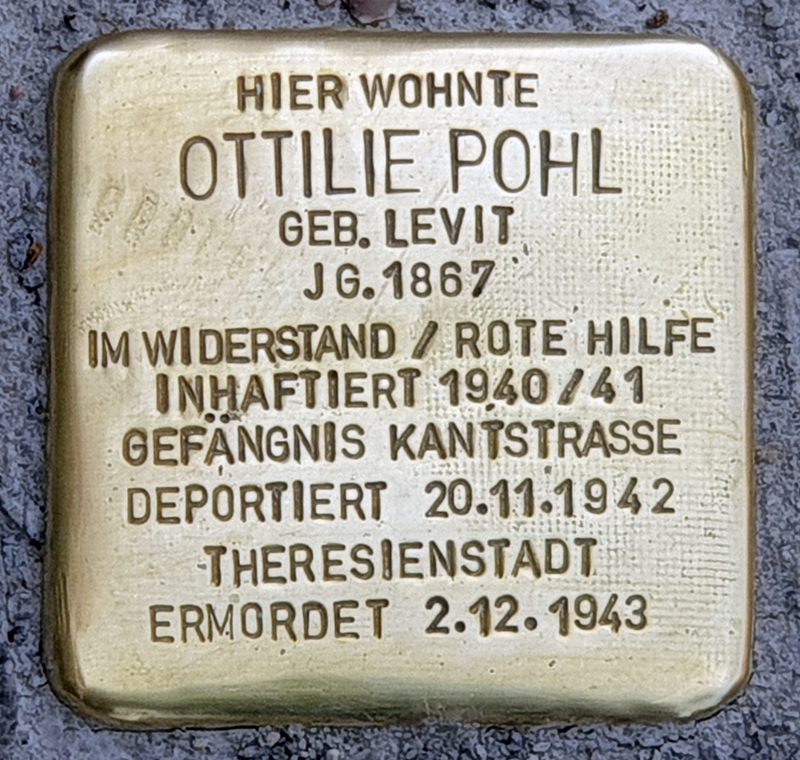
The name on the sign
She was born Taube Levit on 14 November 1867 in Schönwalde, near Luckau, and she signed her name Taube. She trained as a milliner, moved to Berlin, and in 1893 married Wilhelm Hermann Pohl, a coachman who later worked in a factory. They had three children. One son died as a baby.
In 1890 the ban on socialist organizations ended. She joined the Social Democrats. During the First World War she opposed the war, and she moved to the Independent Social Democrats, the party that had broken with the pro-war majority. She and her son handed out the Spartakus letters, the underground pamphlets of the radical left. In 1920 the district of Tiergarten elected her to the Berlin city council, where she sat on the committees for poor relief and for schools. Later she joined the Communists.
After 1933 she worked with Rosa Lindemann in the Rote Hilfe, the Communist group that helped families of people under arrest. They looked after the children. Her last home was Beusselstraße 43, in Moabit, another district of Berlin.
The Gestapo arrested her in 1940. She was seventy-three. On 20 November 1942 she was deported to Theresienstadt. She died there in December 1943, at seventy-six.
The records disagree about the prison. One account says she was taken from the women’s prison on Barnimstraße. Another says she served eight months at the prison on Kantstraße, was released at the end of 1941, and was deported the next year because she was Jewish. Both agree on the camp, and on the month of her death.
On 31 July 1947 Berlin took Ludendorff’s name off this street and put hers on it. The stone in the photograph is not on this street. It is in the pavement at Beusselstraße 43, and it was laid on 10 May 2025. It gives the Kantstraße prison and the date 2 December 1943. A porcelain plaque hung on that house from 1989 and was gone by 2018. Paul Enck walked Pohlstraße in 2020 and found nothing here that said who she was. A Berlin memorial register records a supplementary name-sign on this street since 2021.
Photograph: OTFW, 12 May 2025, Wikimedia Commons, CC BY-SA 3.0. Stolpersteine in Berlin, Beusselstraße 43. The removed plaque: Gedenktafeln in Berlin. Paul Enck, „Straßen im Kiez: Pohlstraße“, 23 October 2020. Wikipedia, „Ottilie Pohl“.
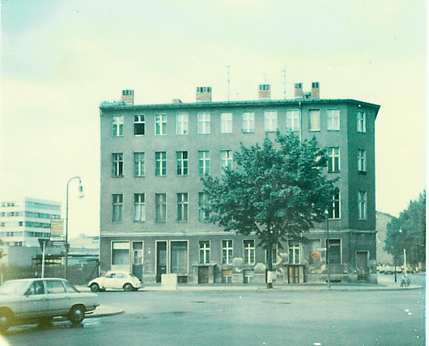
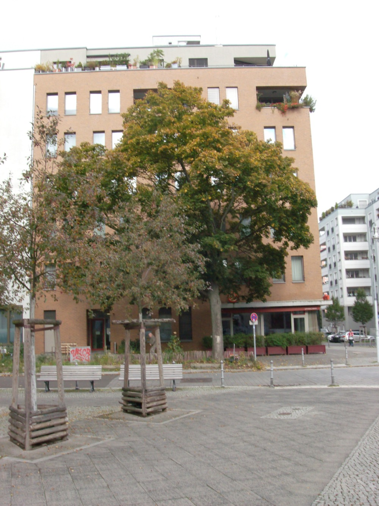
Pin 44 · and the house at number 2
Joseph Lückerath moved into a shop flat at Pohlstraße 2, on the corner of Flottwellstraße, in April 1970. The rent was 67.78 marks for 55 square meters. The building had been a hotel for railway workers. In 1978 he was given notice, and a flat at number 44. Number 2 was demolished soon after. He writes that it was the last house taken down for a feeder to the Westtangente, a motorway that was still on the plans, and the last home on Flottwellstraße. A hotel stands on the corner again. His later photograph is on the right. The camera is not in the same place. The corner is.
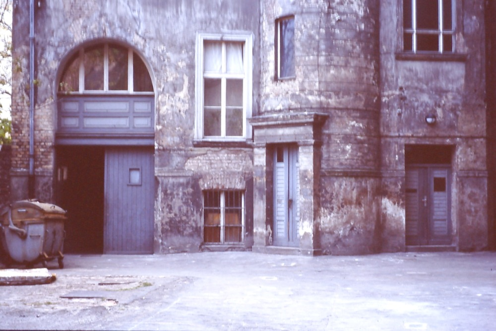
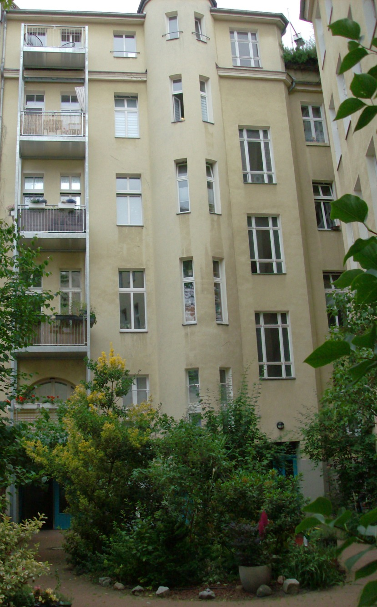
At the end of the war, he writes, eleven houses were left of nearly a hundred. From number 44 he could see the backs of the houses on Kurfürstenstraße, because the plots along Pohlstraße held only one-story sheds. A new row went up between 1984 and 1986. Numbers 1, 3, and 5, at the corner of Dennewitzstraße, were not built until 2012.
J. Lückerath, „Zwischen 1970 und 2025: Bilder aus der Pohlstraße“, 11 February 2026. All four photographs are his.
Pin · Pohlstraße 4
This stop is one article, about the building under its old number. A Czech researcher, Přemysl Černý, told Paul Enck that the Chiffriermaschinen Aktiengesellschaft, the company that sold the Enigma coding machine, had its office at Steglitzer Straße 2. That address is Pohlstraße 4 today. Arthur Scherbius, the inventor, was born in Frankfurt in 1878, trained in Hanover, and died in 1929 at the Unger clinic on Derfflingerstraße 19, a few streets from here.
Enck withdrew the first version after a note he believes came from the family of Scherbius’s wife, Liselotte Taaks. He published the revision with that note still attached. The photograph shows Scherbius around 1913.
„Spaziergang in die Vergangenheit (45): ENIGMA in der Steglitzer Straße“, 3 October 2026. The revision is Teil 2, 17 October 2026. Photograph: Wikipedia, Arthur Scherbius, public domain, as credited in the article.
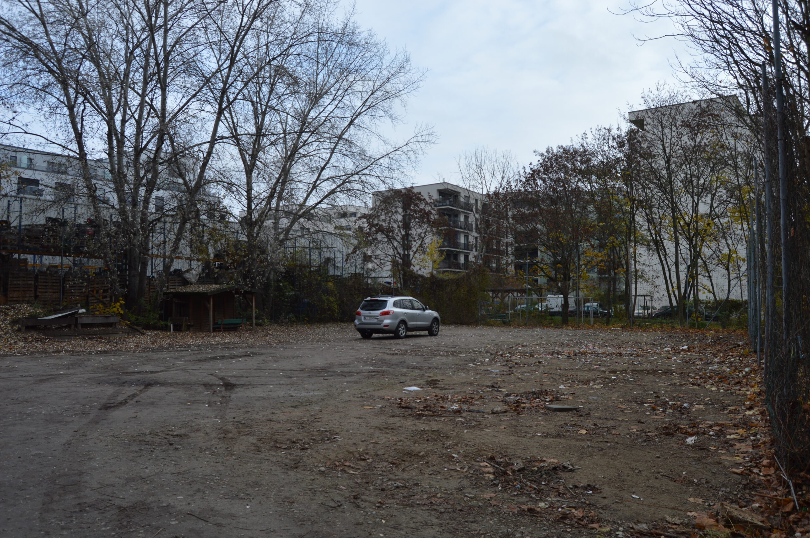
7Pins · numbers 8 and 9–16
Karsten Masch, who runs youth work for the neighborhood association, drew the lost playing fields in red. The last protected open ground east of Potsdamer Straße was the football field at Pohlstraße 9 to 16. The association used it until 2018, when a housing plan appeared, for refugees and for other people the city had failed to house. The containers were removed. By November 2022 the housing company Degewo said planning had stopped, and that a legal procedure meant they would say nothing further. The photograph shows the cleared ground.
Eight years later there was still no replacement field. A basketball court across the street had been promised for just as long.
Karsten Masch, „Das Verschwinden geschützter Freiräume“, 21 June 2022. „Kein Bolzplatz in Sicht“, 29 November 2022, photo bse. „Bürgergespräch mit Bezirksstadtrat Ephraim Gothe“, 25 January 2024.
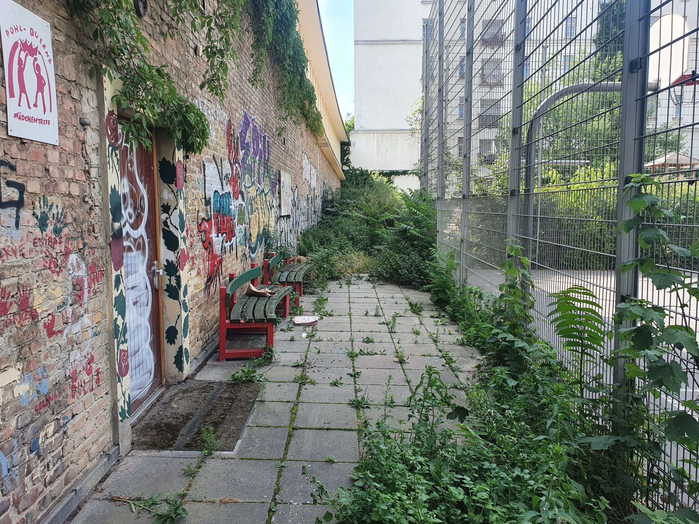
8Pin · Pohlstraße 11
About twenty-five years before the article of September 2022, the neighborhood association took on the railway arches at number 11. There are thirteen of them. Artists and makers have worked there since 2001. The youth club, Jugendclub Pohl 11, has been there since 1998. In the blocks between Potsdamer Straße, Flottwellstraße, the canal, and Kurfürstenstraße, more than 17 percent of the residents are under eighteen. The arches were the place that still had something organized to offer: open youth work, and advice if you asked for it.
The line that put the arches here is older. In October 1926 the subway opened from Gleisdreieck to Kurfürstenstraße. The tracks drop nearly twenty meters and cross thirty plots. You reach the studios through a set-back gate, between the playground and the last house. The train is overhead the whole time.
„Jugendarbeit unter den U-Bahn-Bögen“, 27 September 2022. Gedenktafel „Viadukt im Häuserblock“, Kurfürstenstraße / Dennewitzstraße.
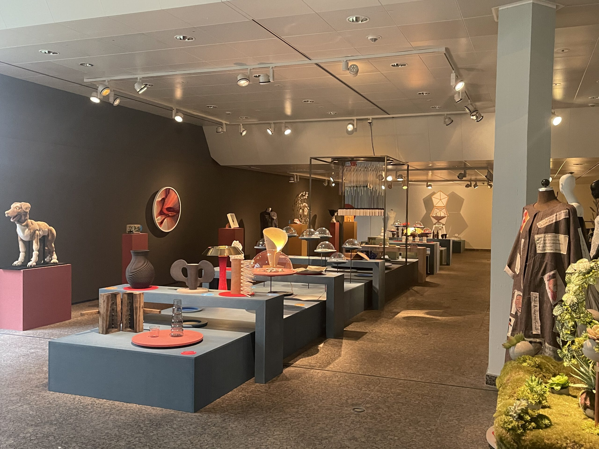
9Pin · Pohlstraße 11, the studios
Evelyn Klam and Michael O’Meara work in these arches. In April 2023 they showed at the Museum of Decorative Arts, with the craft chambers of Berlin and Paris. Her clay figure wears five white glazes, named for kinds of snow: powder, flakes, sleet, graupel (soft hail), and slush. His box is made of nine woods, among them maple, cherry, and jacaranda, and it has four compartments.
„Fünf Glasuren und neun Holzarten“, 11 April 2023. „Einladung zur Kunst in den U-Bahnbögen“, 24 April 2024. „Zum Gallery Weekend öffnen die Ateliers“, 24 April 2025. „Bummel durch die Pohlstrasse am Gallery Weekend“, 30 April 2023.
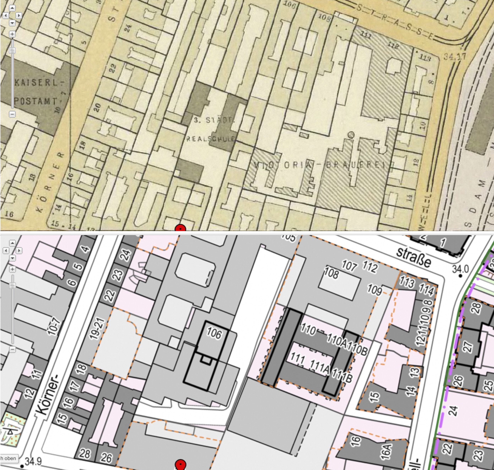
10Pins · numbers 16, 18 and 20
The Körner secondary school opened on 13 October 1887 as the III. Höhere Bürgerschule, the third higher civic school, with three classes and 145 boys. It began in temporary rooms on Kurfürstenstraße 144, then on Derfflingerstraße 18a. In the autumn of 1891 it moved into its own building at Steglitzer Straße 8a: twelve classrooms, a physics room, a drawing room, an assembly hall, a gym, and flats for the director and the caretaker. In 1912 it was named for the poet Theodor Körner. On the 1915 postcard the gate still reads „III. Höhere Bürgerschule“, between the old numbers 8 and 9.
The building is gone from the street and still present on the map. A tool called Histomap, given today’s number 16, drops a marker and lays the 1910 plan over the street as it is. The building file says the classrooms survived the war and were later used as storage and as workshops. The old address books all say 8a. After the renumbering, that door should have been 16. The articles also place the passage behind today’s number 20, the old numbers 9 and 10. Three markers, one school. The overlaid map is how they are reconciled.
„Die Körner-Realschule“, 10 December 2024. „Wo war die Körner-Realschule?“, 18 January 2025. „Noch einmal: Wo war die Körner Realschule?“, 14 March 2026.
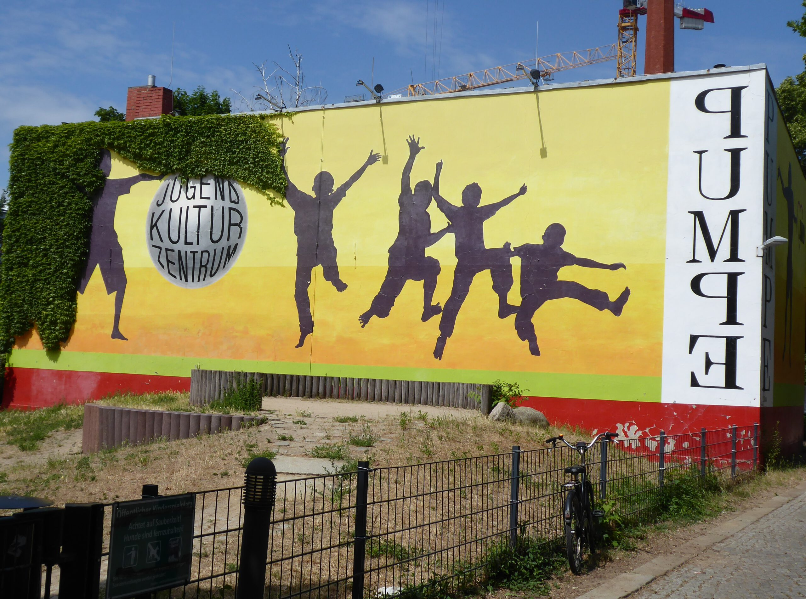
11Pin · Pohlstraße 23
On 14 June 2023 neighbors walked with two councilors, Ephraim Gothe and Almut Neumann. The afternoon started at Die Pumpe, the youth center on Lützowstraße. A noise study, not yet official, had confirmed what the center feared: the new block behind it and the center’s daily work cannot share the courtyard. Gothe said the building permit would wait until the developer had a plan for the noise.
The photograph is Die Pumpe, on Lützowstraße, which is where the article begins. The map marks number 23 because that is where the file placed this stop.
„Kiezspaziergang mit den beiden Stadträten Dr. Almut Neumann und Ephraim Gothe“, 15 June 2023. Photo eki.
Pin · Pohlstraße 37
Ivy & Gault make ceramics at number 37. Next door, Son Kitchen cooks Korean food. One evening the studio and the kitchen shared the room.
„Ivy & Gault und Son Kitchen: Keramik & koreanische Kulinarik“, 1 December 2022.
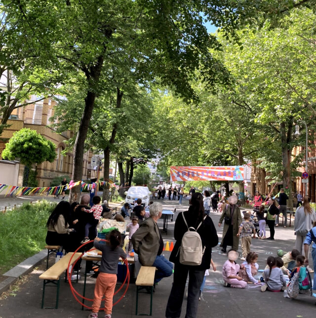
13The street pins · the Spielstraße
A Spielstraße is a play street. For a few afternoons the road is closed to cars and given to children, and on this map it fills the middle of the street. The materials were paid for by the neighborhood fund. Drivers were slow to get used to it.
The argument that lasted was about the cars. On the European car-free day in 2025, the public-order office said it could not tow cars off a play street. A play street, the office said, was not a public road. The police wrote tickets instead. In April 2026 the office agreed to tow.
The Spielstraße reports from 24 June 2022 through 23 September 2026. This photograph is from 22 May 2025, © eki.
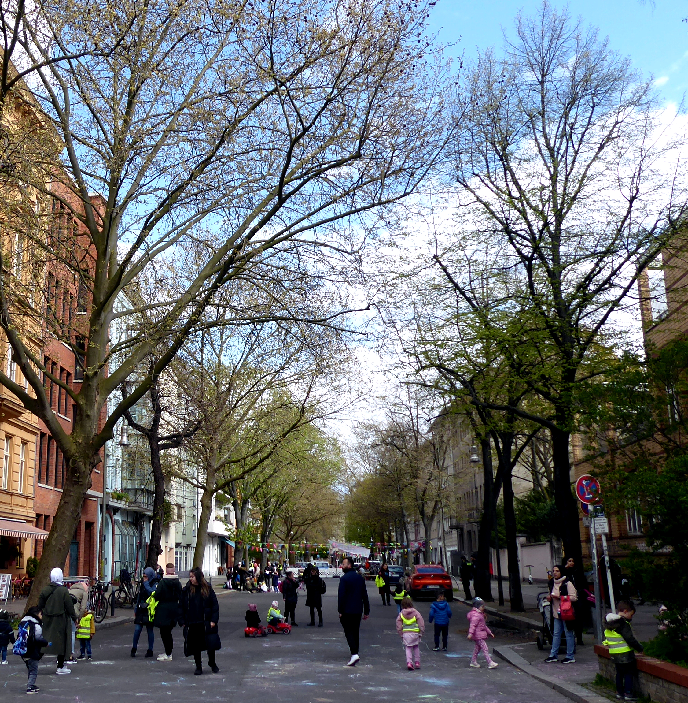
14The street pins · one guest
Fingerleicht is a puppet theater that packs into a car. Katharina Fial has run it since 2007, after years as an assistant director and dramaturg in Berlin, Heidelberg, Greifswald, Porto, and Lisbon. She won the first prize of the Kulturstiftung der Länder, the cultural foundation of the German states, for a program called „Kinder zum Olymp“, which brings children to the arts. She brings the theater to the closed road. One piece is „Der gestiefelte Kater“, Puss in Boots.
„PUPPENTHEATER FINGERLEICHT zu Gast in der Spielstraße“, 27 April 2023, photo eki. „Die Spielstraße mit der Puppenspielerin Katharina Fial“, 22 May 2026.
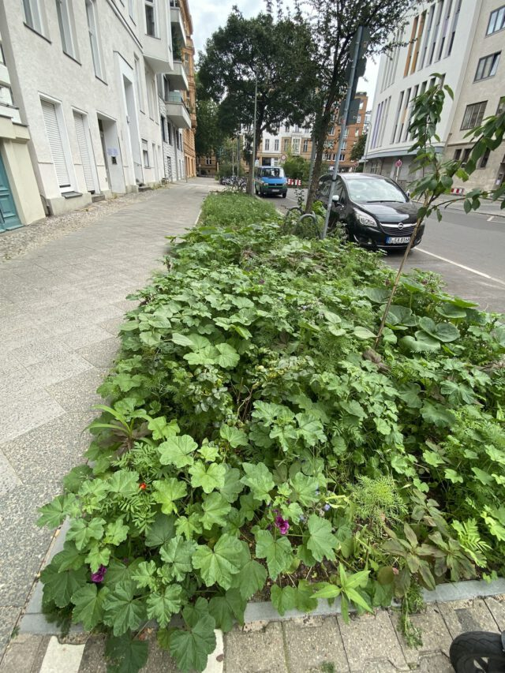
15The street pins · the pavements
In March 2024 the roads office began taking up the pavement on Pohlstraße and Kluckstraße, between Potsdamer Straße and Lützowstraße, and planting the ground underneath. Twelve hundred square meters. Tree pits were widened and joined. The sidewalk was brought to at least two and a half meters wide. Almut Neumann announced it. Where a café had a forecourt, some paving stayed, so the tables could sit between the beds.
Before the work was finished, notices went up. Residents were told not to plant. Some beds were already green. People on the Kluckstraße collected signatures.
The liberal party, the FDP, asked the borough assembly to shrink the unpaved area. The neighborhood forum answered, unanimously, that the beds should stay. They water the trees. The motion failed.
„Start der Entsiegelungen“, 19 February 2024. „Entsiegelung der Gehwege – eine Posse(?)“, 2 August 2024, photo FP. „Baumscheiben in der Pohl- und Kluckstraße“, 10 October 2024. „Zäunchen in der Pohlstraße“, 12 February 2025. „Entsiegelung soll voll erhalten bleiben!“, 14 February 2025. „Pohl- und Kluckstraße bekommen neue Pflanzen“, 12 May 2026.
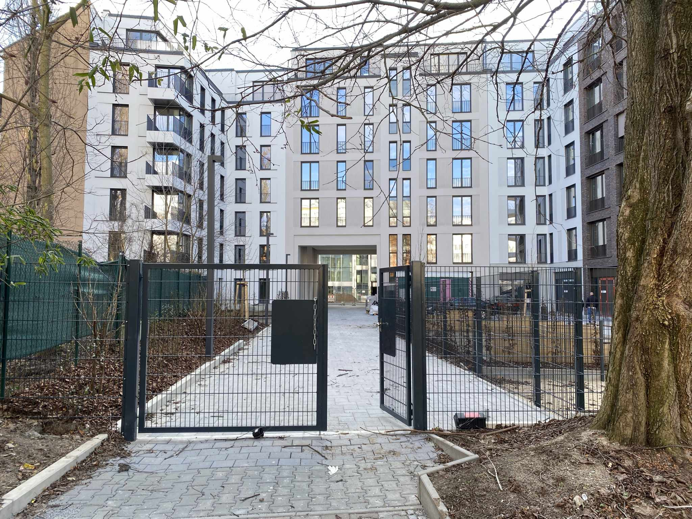
16The street pins · a path
There was a way through from Pohlstraße to Kurfürstenstraße before the Schönegarten housing was built. It is the shortcut to the subway station and to the new shops. The planning contract says the developer must build a path at least five meters wide, lit, for people walking and cycling, and may lock it at night: from ten until seven in summer, from eight until seven in winter. For a while both gates stood open. Then, in one week of December 2022, both were shut during the day. Someone had fixed the latch that neighbors used to keep the Pohlstraße gate from closing. A wheelchair and a stroller need the gate actually open. It will not stay hooked.
„Aus gegebenem Anlass: Die Durchwegung zur Kurfürstenstraße“, 9 December 2022, photo FP. „Immer wieder ein Thema“, 15 October 2025. „Neue Paketbox im Kiez“, 30 April 2024.
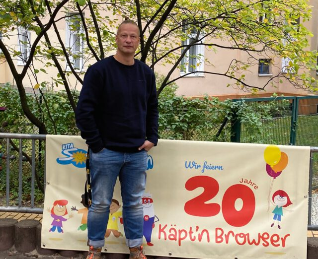
17The street pins · a kindergarten
The interview sits on the general street stop, and the kindergarten itself is on Pohlstraße. Sascha Ruß describes a quarter split by money. There are families who have always lived here, and newcomers with very different means. Families with several children stay in flats that are too small, because a larger one they can afford does not exist. Inside the kindergarten the split is ordinary: high incomes, people on benefits, and people who do not appear in the statistics at all.
„Tiergarten Süd im Blick“, interview with Sascha Ruß, 27 November 2025.
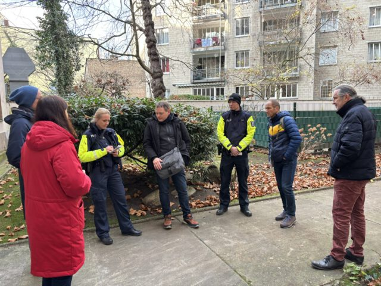
18The street pins · a walk with the police
Neighbors had reported break-ins in cellars, trespass, and disturbances, and drug use and prostitution in doorways, and more tents. Houses and cellars on Pohlstraße had been broken into several times in half a year.
A count on Flottwellstraße found 340 cars an hour. More than 300 an hour counts as a burden. Laura Fritsche told fifty neighbors that 87 percent of journeys here are made on foot, by bicycle, or by public transport, and that 20 percent of residents own a car. Pohlstraße is one edge of a traffic-calming area drawn between Schöneberger Ufer, Potsdamer Straße, Kurfürstenstraße, and the park.
„Rundgang zum Thema Kriminalitätsprävention“, 18 December 2025. „Kiez-Spaziergang im Lützowkiez“, 31 January 2025. Jörg Borchardt, „Ein interessanter Spaziergang zum Kiezblock Flottwell“, 4 June 2025. „Lebhafte Diskussion über Fahrradstraßen“, 6 March 2024.
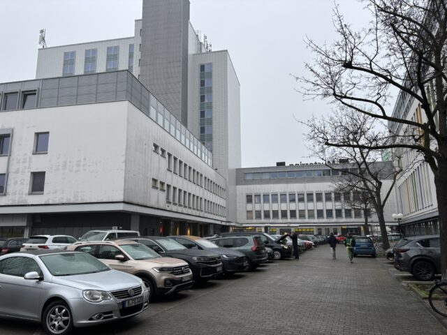
19Pins · the street, and number 58
The day after Christmas 2025 the car park was full, and the signs said everything must go, thirty percent off. Berlin knew the shop by its own line, „Ich soll Sie schön grüßen“, which asks you to pass on someone’s warm regards. Friedrich Wilhelm Hübner, a master joiner born around 1850 in Schwerz, came to Berlin about 1880 with his wife Helene. With the carpenter W. Schenck he opened a joinery and a furniture shop at Lützowstraße 14. A photograph from 1908 shows the shop window at Steglitzer Straße 27.
The present owners, the house of Türklitz, sent word that the family believed it descended from Jewish cloth merchants in Brandenburg an der Havel, baptized around 1650 under the name Tuchelitz. Enck went to the cathedral archive and read the handwritten indexes. In 1639 a Jewish man was baptized at St. Katharinen and given the name Christianus. His former name was Jacob. No family name was written down, because Jews then had none in that register. The local family book records one Jacob Tüchelmann made a citizen in 1624. Enck’s conclusion is that the descent cannot be shown from the records that exist.
„Möbel Hübner schließt nach 115 Jahren“, 27 December 2025, photo FP. „Geschichte von Handel und Gewerbe (7): Möbel Hübner“, 29 February 2024.
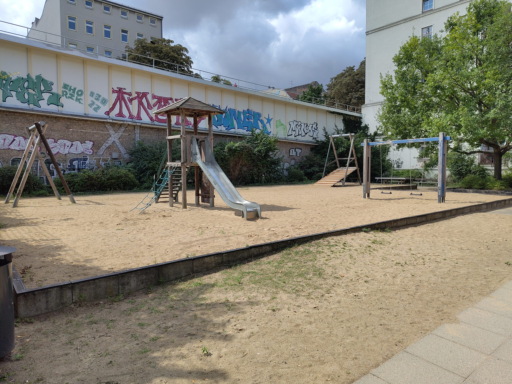
20The street pins · the upper end
The series „Kiez mit Kind“, the neighborhood with a child, keeps missing this one: after the shopping, after Gleisdreieck, after the ice cream. At the upper end of Pohlstraße there is a large sand pit, and a slide tower you climb by stairs or by a net. There are two swings and no baby swing. A short steep ramp leads to a cableway. For the smallest children there is a run of two stairs, a small slide, and a tunnel, inside a low fence. Three table-tennis tables and a basketball cage are there for when the tables in the park are taken. Walls and benches sit in the shade. There is nothing to eat. The series calls it the wrong place for a whole day and the right place for a pause. One article puts it between Flottwellstraße and Potsdamer Straße. The name neighbors use puts it at the upper, western end.
The corner of Körnerstraße and Pohlstraße is a different kind of childhood, and it is not really a playground. The same series says so, and then describes a sandpit, two rocking animals, a fenced run, and the terrace of a small café. Parents can eat there and still see the children, as long as the children have not yet learned the swing gate.
„Kiez mit Kind: Der geheime Spielplatz in der Pohlstraße“, 26 August 2024. „Kiez mit Kind: Buddelkiste Körnerstraße“, 25 January 2025.
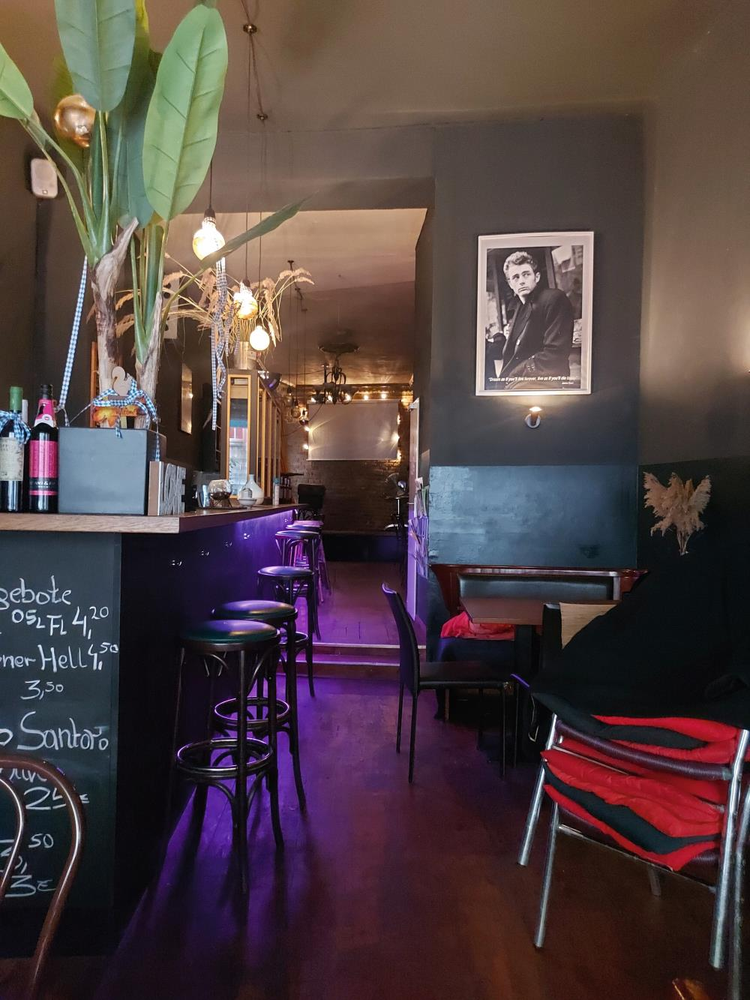
21Pin · Pohlstraße 65
The steps are worn. Inside, the first impression is a living room: warm light, a full bar, and a wine glass picked out in lights on the wall outside. The window seats and the stools at the counter are already taken. A band is playing at the far end. Smoking is allowed only now and then. Annetta has been the landlady since 9 September 2022. She calls the guests friends. Before it describes the room, the article offers two classroom definitions. In physics, isotopes are variants of one element. In a German lesson, isotopy is a level of meaning that holds a text together. The article says the second one fits.
„Isotop zu dritt“, 20 December 2023.
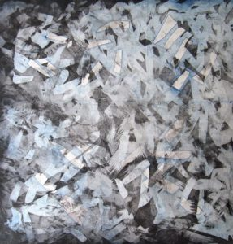
22Pin · Pohlstraße 71
The gallery at number 71 changes its window often enough that a neighbor notices. It sits on the way to Les Climats and to Isotop. Both are on this street.
In June 2022 Uschi Krempel showed „blattwerk“, leaf-work. She held brushstrokes on a copper plate, then shifted the plate between printings, so the colors overlap. The prints read as leaves, or as pop art in red, blue, and yellow. That autumn Ophelia Beckmann showed painting and tape, under the title „From Leaf to Leaf“.
Across the street, Gilla Lörcher has been at number 73 for fourteen years.
Galerie ep.contemporary, Pohlstraße 71. Uschi Krempel, „blattwerk“, 8 June 2022. Ophelia Beckmann, „From Leaf to Leaf“, 29 September 2022. strictly form!, 22 August 2024. „Zwischen uns Fotografie“, 4 March 2025. Gallery Weekend, 29 April 2026. Die kleineren Galerien, 4 May 2026. „Bummel durch die Pohlstrasse“, 30 April 2023.
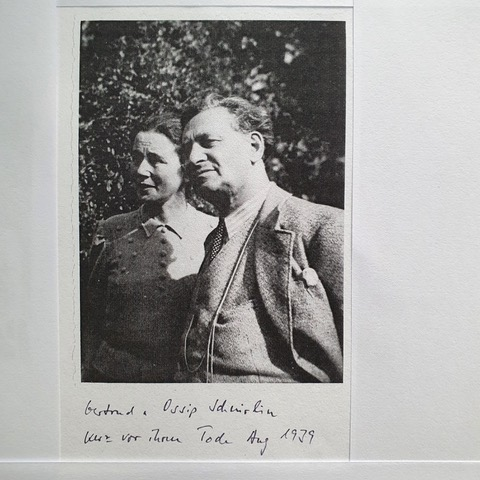
23Pin · Pohlstraße 60
On 8 October 2022 Gunter Demnig laid the stones for Ossip and Gertrud Schnirlin at number 60.
Ossip Schnirlin was born on 3 March 1868 in Proskuriv, in what is now Ukraine. His parents were Judko Schnirlin and Chane, born Feige. He studied with Joseph Joachim and played as a soloist. After a finger injury he taught, and he edited violin music. On 7 April 1906, in Berlin, he and Max Reger gave the first performance of Reger’s Suite im alten Stil. A second article says he was the last musician to play with Reger: a trio in Jena on Easter Monday, seventeen days before Reger died in a Leipzig hotel, at forty-three.
Gertrud was a concert pianist and a musicologist. The Nazi race laws made no exception for either of them. The photograph is private. It was taken shortly before their deaths, and the article prints it.
On 9 November that year the SPD of Tiergarten Süd and the same initiative walked the Lützowstraße, the Potsdamer Straße and the Pohlstraße for the anniversary of the pogrom. The custom is to clean all 69 Stolpersteine in Tiergarten Süd on 9 November and on 8 May, so they shine.
„Stolpersteinverlegung in der Pohlstraße“, 4 October 2022. „Gunter Demnig verlegt Stolpersteine für Ossip und Gertrud Schnirlin“, 8 October 2022. „Damit sich der Holocaust niemals wiederholt!“, 10 November 2022.
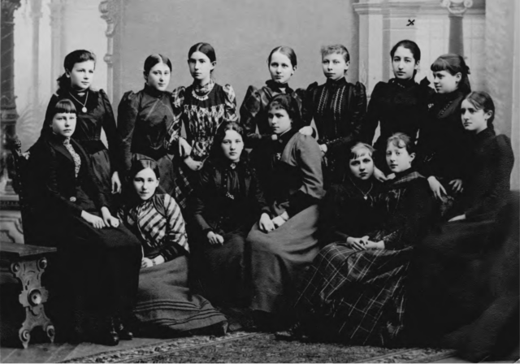
24Pins · number 62, and a table at number 75
The Charlottenschule was planned at the same time as the Falk boys’ school. It was a public high school for girls, in a wealthy district that had fewer public schools than most. The city did not want to ruin the private schools, which lived on fees, so only six classes opened at Easter 1880, and the top two at Michaelmas, the start of the autumn term. The public school still charged 25 marks a quarter, 100 marks a year. The plot continued the boys’ school at Lützowstraße 83 through to Steglitzer Straße 29, today’s Pohlstraße 62, with a wall between the two schools. You entered from Steglitzer Straße.
Leopold Engel and G. Wenzel, who kept an apple-wine shop at number 29, had offered the land in 1870. Engel wanted 78,000 marks. He listed the rents of seven households in number 28, about 3,000 talers a year.
The photograph of fourteen girls, about sixteen, dressed for a studio around 1900, was handed across a table at Les Climats. Roland Kretschmer remembered the school article and introduced Enck to Cheryce von Xylander and to Bubar, who cooks the crêpes at the street party. A new book has an essay on the school and on one pupil, Gertrud Bruck, born in 1875, who married the manufacturer Hans Siegfried Cramer. Hermann Muthesius designed them a house in Dahlem, at Pacelliallee 18–20, now used by Stanford University. The Cramers left for America in 1933. The photograph is tied to number 75, because that is where it changed hands. The school itself is number 62.
„Die Charlottenschule in der Steglitzer Straße“, 27 October 2024. „Die Backfische der Charlottenschule“, 5 September 2026. Photograph of the pupils, photographer unknown, printed with permission.
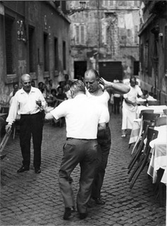
25Pin · Pohlstraße 75
Roland Kretschmer runs the wine bar at number 75. The house’s own page says the shop has been there since 2008, and the bar since 2011. The wine is Burgundy, bought from the growers. On 6 September 2024 the invitation said Les Climats was turning sixteen, and the birthday was a Pohlonaise.
The Pohlonaise is the summer evening on the pavement. The invitations, as mitteNdran prints them, start at 18:00: crêpes and galettes from Bubar’s truck, wine and crémant, and a band. On 12 May 2023 they described the round: a glass while you wait at the truck, the band, children playing, then dancing, then back to the truck. The Hot Club of Berlin plays jazz manouche inside through the colder months, two guitars and a bass, every other week. They call the Pohlonaise the open-air version: a crêpe truck, sparkling wine, and a quartet outside. The invitation of 26 June 2024 names that Friday’s band: Vero Nouk singing, George Birkett on guitar, Martin Buhl on double bass, Leo Gertsner on drums. The play-street meetings happen here because this is where the neighbors already are. The house page lists Tuesday to Thursday from 16:00 to 23:00, Friday and Saturday from 14:00 to midnight, and Sunday and Monday closed.
It is a Friday, at 18:00, through the terrace season. In 2024 the first was 3 May, and the bar called that the opening. The last that year was 20 September, to close the summer. In 2023 the last was 6 October, before the evening got too cold. From 2 October 2024 the jam sessions were indoors again, every other Wednesday.
Les Climats, Pohlstraße 75. lesclimats.com. Pohlstraße = Spielstraße, 24 January 2023. Pohlonaise, 12 May, 10 May 2023. Jazz live und Gute Küche, 16 May 2023. Heute wieder Pohlonaise, 9 June 2023. Pohlonaise, 23 June, 22 June 2023. Pohlonaise, the band, 26 June 2024. Einladung zur Pohlonaise, 4 September 2024. First of 2024, 3 May. Last of summer 2024, 20 September. Last of 2023, 6 October. Hot Club of Berlin. Photo F. Pohlmann.
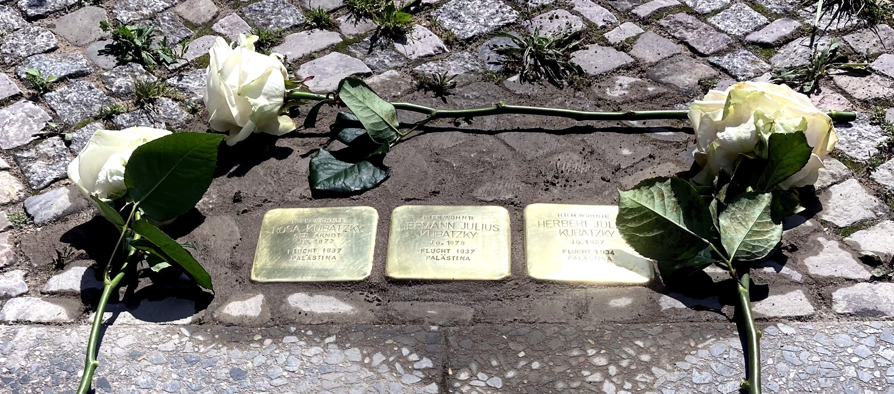
26Pin · Pohlstraße 64
On 24 June 2024 ten memorial stones were laid for the Kubatzky family across Berlin. In this quarter, three went into the pavement at Lützowstraße 87, where the Allegro schoolyard is now, for Hermann Julius Kubatzky, for Rosa, born Arndt, and for their son Herbert. They fled to Palestine in the 1930s and survived. The photograph shows those stones.
At three o’clock the same day the guests walked to Pohlstraße 64. Hedwig Kubatzky was born on 13 January 1875 in Zippnow, in Pomerania. She worked in Berlin as a seamstress and a milliner. Until 1940 her address was Ludendorffstraße 64, this house, where she kept a studio. She had to give up the flat. Her last address was a Judenhaus, a house where Jews were forced to live, at Turmstraße 9. On 27 November 1941 she was deported to Riga. She and the others who survived the journey were shot in the Rumbula forest on 30 November.
Her sister Johana, born in 1873, was deported from the collection camp on Gipsstraße on 15 August 1942 and murdered in Riga as well. Johana’s Berlin address was never found, so her stone is here beside her sister’s.
Oliver Staack had bought Wanda Kubatzky’s postcards to her fiancé at a flea market. He traced the family from Deutsch Krone, and during the pandemic he found Debbie Kirby through a genealogy site. Theo Bröcker, of the memorial-stone initiative in Mitte, spoke for the two sisters.
„Stolpersteine zum Gedenken an die Familie Kubatzky“, 24 June 2024, photos EKI and FP. Announcement, 19 June 2024. „Neues aus dem Kiez“, Max Söding, 24 June 2024.
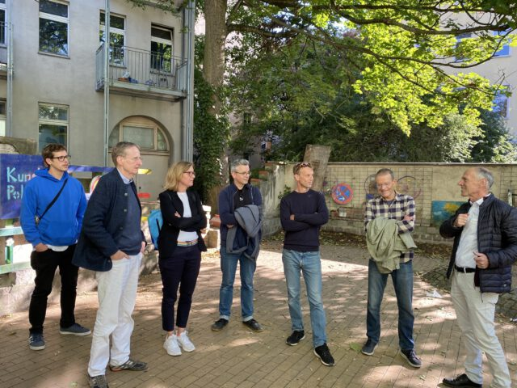
27Pin · Pohlstraße 89
In 2025 the neighborhood association, the Stadtteilverein Tiergarten, turned forty. Fewer people know the association than know its neighborhood center. The house it calls its cradle is Pohlstraße 89. The house was to be demolished, like many others, for the Südtangente, a motorway planned to run roughly parallel to this street. The article says the line would have come from Lietzenburger Straße, across the old car park of Möbel Hübner, to a junction where Gleisdreieck park is now. Several young people occupied number 89 and kept it standing. The council of people affected by the plan became the association. It then opened a neighborhood-management office in a neglected quarter beside the wall at Potsdamer Platz. New houses rose on the empty plots at the eastern end. Old houses were repaired. The association built the neighborhood center in 2006 and still runs it.
Lückerath’s demolition at number 2 and this occupation at number 89 are the two ends of one plan, told from inside the street. A broadcast line about a motorway running from the Urania can sit beside them. These articles are the ones that name the houses.
„40 Jahre Stadtteilverein Tiergarten“, 28 September 2025, photos FP. The photograph is the anniversary walk paused in the courtyard. Lückerath, 11 February 2026.
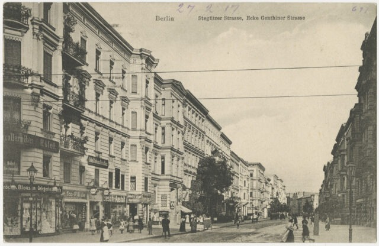
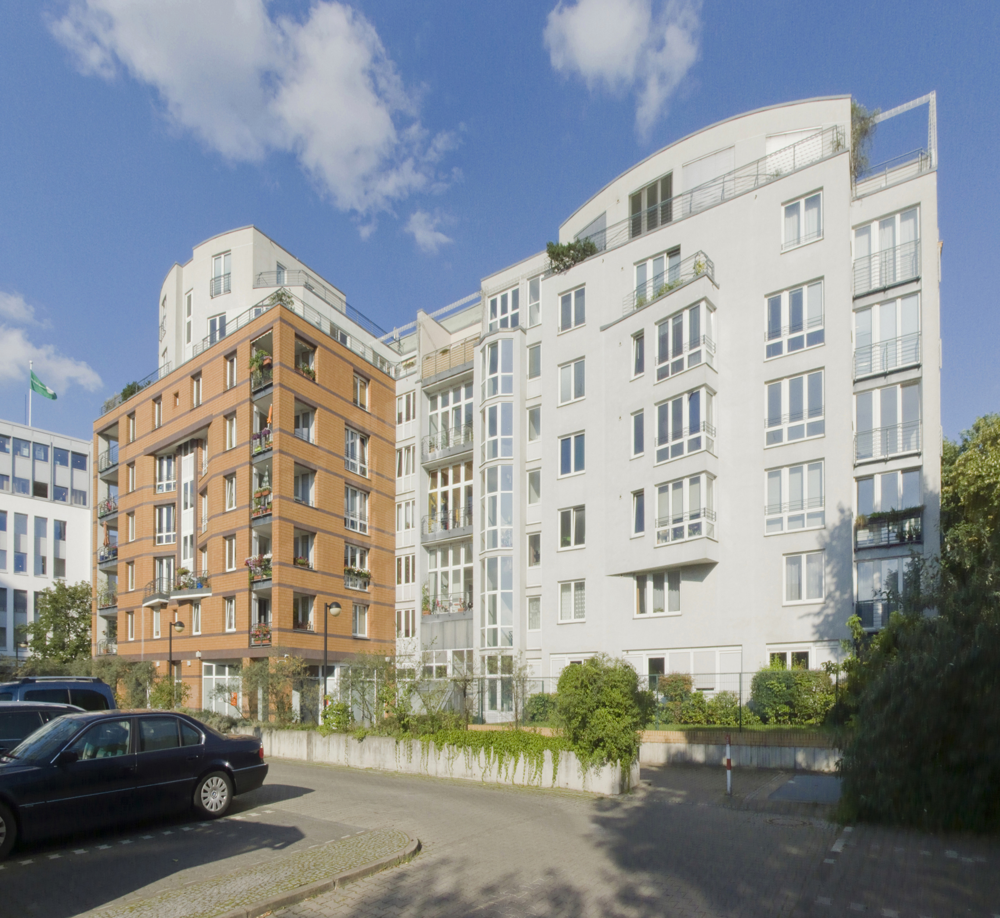
Pin · Pohlstraße 97
The last stop is number 97, where the street meets Genthiner Straße. Minna Lehmann, born Stargardt, lived from 1822 to 1912. She was a great-aunt of Walter Benjamin. In Berliner Kindheit um Neunzehnhundert, his memoir of a Berlin childhood, he places her among the aunts who no longer left the house, and he gives her the oriel, the bay window, where Steglitzer Straße runs into Genthiner Straße. The flat was locked twice, as a room should be when it holds something precious. Past the street door, a dark door on the left, with a bell. A steep stair. In the dim gaslight, an old servant. Then the second lock.
Jun Tanaka, who translated the book into Japanese, wrote to Enck about that second lock. The picture on the left is a postcard of the corner from about 1917. The picture on the right is the housing that stands there now, photographed on 9 August 2012. It is the same corner. The camera is not standing in the same place, and the old block is gone.
„Spaziergang in die Vergangenheit (39): Minna Lehmann, Pohlstraße 97“, 7 May 2026. The 2012 photograph is on Wikimedia Commons: „2012-08-09-Wohnbebauung-Pohlstr-Genthiner-Str.jpg“.
The same pins · articles that only touch the street
A large share of the 109 articles mention the street only once. They belong on the walk, and they are about something else.
Werner Herzog, in the photograph, cast Bruno S. in Jeder für sich und Gott gegen alle (1974). Old neighbors remember him with a plastic bag and an accordion, singing in the street. Herzog then wrote Stroszek for him. The German Wikipedia says the script took five days, after the part in Woyzeck went to Klaus Kinski. Bruno plays a street singer just out of prison. He is told to stay out of bars, and he walks straight into the Bierhimmel.
Shot in Berlin puts that bar on the corner of Potsdamer Straße and Pohlstraße. It puts him playing at Pohlstraße 61, his flat in the film at Flottwellstraße 5, and the place he buys fruit, Potsdamer Straße 101. The Berlin scenes were shot between 16 November and 31 December 1976.
Cholera reached Berlin in 1831, before this quarter existed. South of the canal there were laborers’ cottages, and a few summer houses.
Walter Benjamin’s grandmother, Hedwig Schoenflies, lived at Blumeshof 12. Jun Tanaka, a professor in Tokyo, wrote to argue about whether her flat was the grand floor or the top floor. Jieran Cao, a scholar of German literature in Shanghai, is translating Berliner Kindheit into Mandarin.
An Art Week piece looks into a former gallery at Potsdamer Straße 97, at an installation called „Höhlengleichnis“, the allegory of the cave. A women’s walk starts at Lina Morgenstern’s door, Potsdamer Straße 139, and ends with Katharina Grosse at the gallery Max Hetzler. That walk is filed at Pohlstraße 62–64. A guide to post offices photographs the branch on Bülowstraße and is filed at number 69.
The U1 viaduct over Gleisdreieck was built in 1913 and opened in 1926. It is to be replaced for 63 million euros, with work planned from 2028 and trains from 2030. An rbb podcast reconstructs the murder of Alfred Neisser, a receiver of stolen goods and an antiques dealer on Steglitzer Straße. The police file is lost, so the podcast uses the newspapers.
Among them: the Herzog exhibition note, 19 August 2022, photo Clive Oppenheimer. Locations: Shot in Berlin. The walk from the prison into the bar: Kinofenster. The five-day script: German Wikipedia, „Stroszek“. the cholera walk, 14 February 2026; the letters from Tokyo and Shanghai; Art Week, „Höhlengleichnis“; the women’s walk; the post-office guide; „kiek ma!“, 31 January 2024; the U1 viaduct, Matthias Bauer, January and November 2025; the rbb podcast on Alfred Neisser.
Kluckstraße
You are at the west end. The street has had three names: Steglitzer Straße, Ludendorffstraße, Pohlstraße. Ottilie Pohl lived in Moabit, and she was killed in Theresienstadt. Her memorial stone is at Beusselstraße 43. On this street her name is the sign. The articles are the sentence under it.
Photographs and facts from mittendran.de, as captioned on each beat. Street dates from the Luisenstadt lexicon and the Verordnungsblatt für Groß-Berlin, 31 July 1947, page 218. Ottilie Pohl: Wikipedia, and Paul Enck, „Straßen im Kiez: Pohlstraße“, 23 October 2020.

_Ottilie_Pohl.jpg){kind=link}